Rescue
Home to the in-water nursery, where corals collected as fragments of opportunity — or rescued from reefs under threat — are grown and cared for until they are large enough to be returned to the reef.
Growing more resilient corals on land and in the water — then putting them back on the reef.
Coral restoration is an important component of ecological restoration, focused on repopulating reefs that have degraded over time with more resilient corals.
Reef degradation is attributed to multiple, sometimes simultaneous, stressors that coral reefs are under. These include temperature stress from global warming that leads to coral bleaching — an incredibly stressful state for corals — as well as pollution, especially chemical and plastic pollution, and increased sediments from coastal development. The result of these stressors are things like disease outbreaks and mass coral mortalities.
Reef Response researches best practices for coral restoration, incorporating citizen scientists, in an effort to mitigate and offset coral loss at the local level. We are applying cutting-edge experimental techniques and community involvement to replant coral around St. Thomas, USVI.
In our land-based nursery, Reef Response uses a novel technique in coral restoration known as micro-fragmentation. This technique works by fragmenting a piece of coral into 1×1 cm pieces. Because of a wound-healing response, these smaller fragments grow many times faster than larger pieces of coral.
We grow the fragments on small cement pucks until they fill out the diameter in approximately six months. At this point they can either be outplanted back on the reef or fragmented again to increase our brood stock.
What is most exciting is the ability of fragments cut from the same piece of coral to fuse back together into one large piece. This greatly reduces the time it takes for a coral to reach sexual maturity and begin reproducing, helping to contribute even more coral to the reef community.
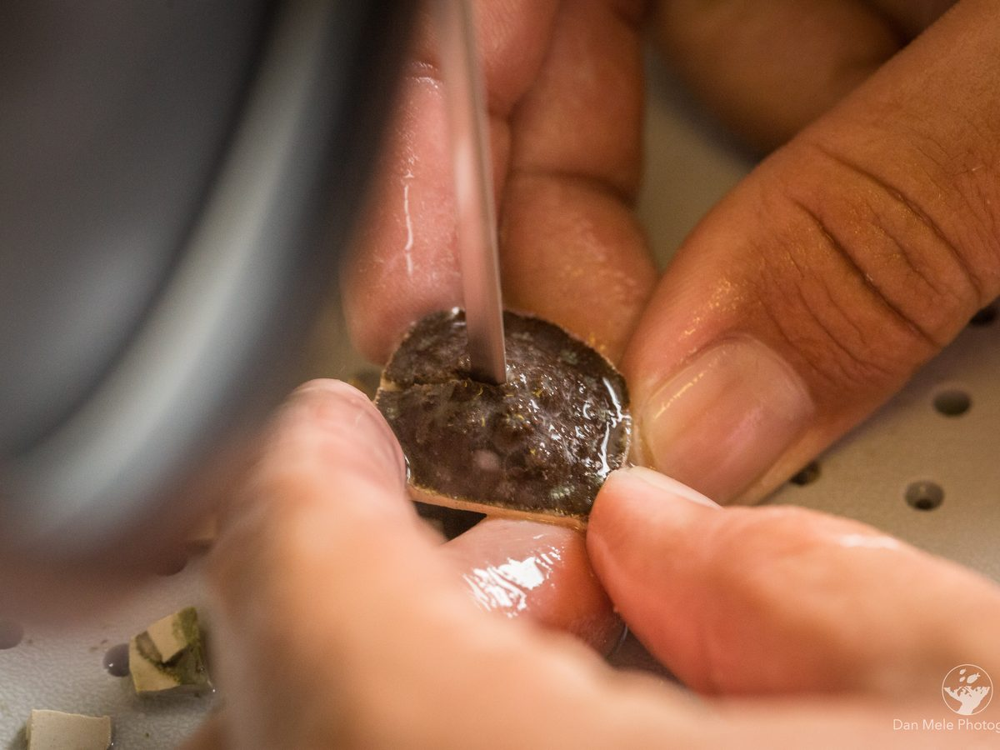
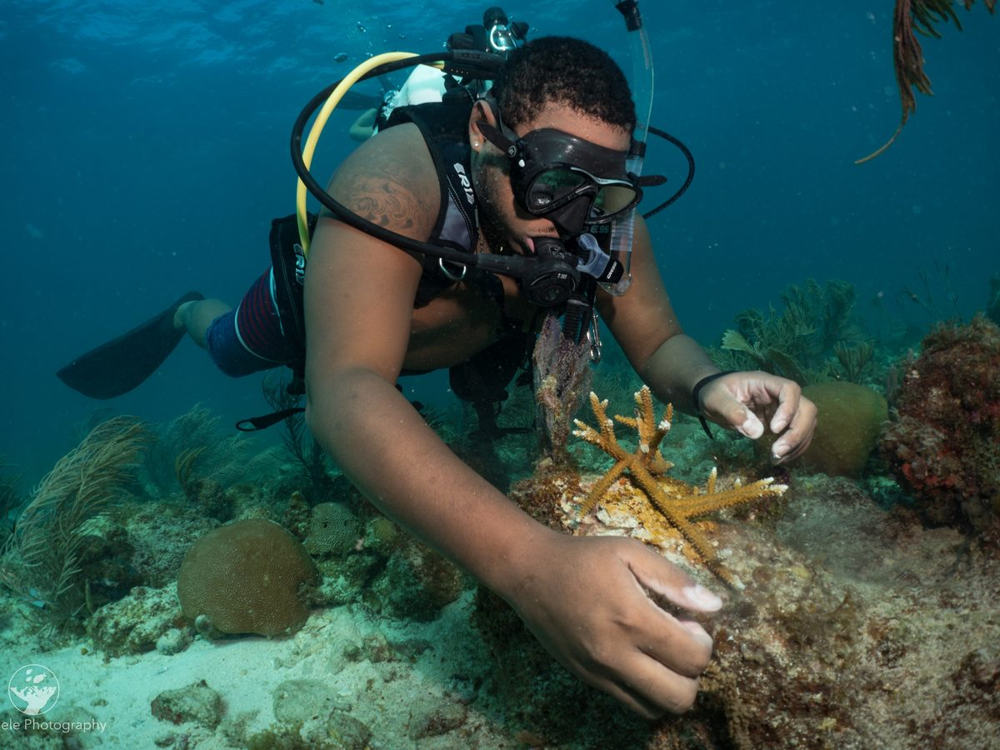
Our in-water coral nurseries are the foundation of the outplanting program. Fragments of opportunity are used to populate our coral nursery structures, where corals are cared for and monitored as they grow.
Once the nursery corals are large enough, we move them to reefs determined to be good locations for repopulating. These corals are then attached to the reef with cement or marine epoxy and are regularly monitored to make sure they remain healthy in their new location.
Our monitoring program involves measuring increases in coral cover and changes in fish communities in response to coral outplanting.
Our flagship restoration site divides a single stretch of reef into three working zones — rescue, research, and restore.
Home to the in-water nursery, where corals collected as fragments of opportunity — or rescued from reefs under threat — are grown and cared for until they are large enough to be returned to the reef.
Where we test restoration methods and monitor how outplanted corals perform, so that what we learn here informs how we work everywhere else.
Approx. 5,500 m²The reef itself — replanted at scale with nursery-grown corals, and monitored for growth, survival, and the return of the fish communities that depend on the structure.
Approx. 6,000 m²corals outplanted
coral species
species listed under the Endangered Species Act
Those corals come from three sources: fragments of opportunity collected from the seafloor, microfragments grown in our land-based nursery, and corals rehabilitated after disease. Educational signage installed on Lovango Cay explains the work to divers and snorkelers visiting the site.
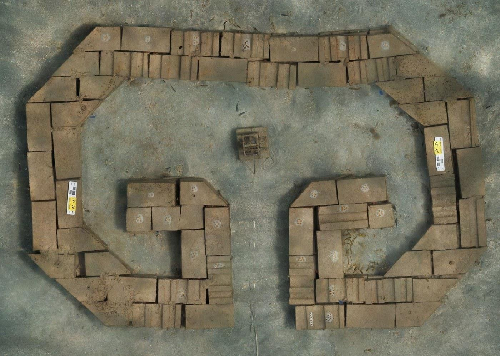
187 marine-grade concrete modules, arranged in the shape of a Taíno double-spiral petroglyph.
Beyond the nurseries, we build and test new habitat. Our artificial reef — the first in the territory — pairs Indigenous design with hard science on fish communities, coral survival, and wave energy.
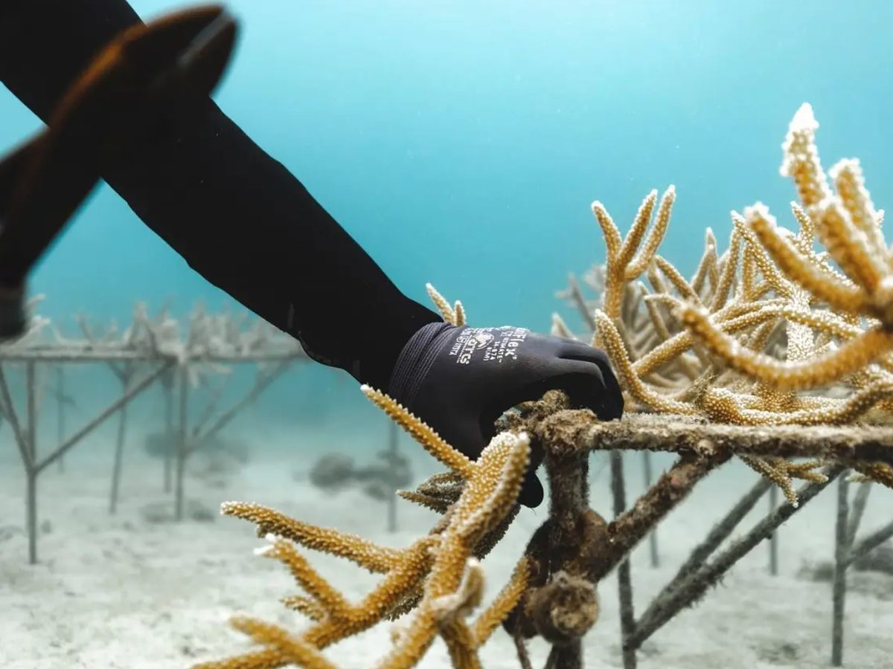
Our branching corals are primarily acquired as “fragments of opportunity.”
This means we collect unattached fragments created by actions that are both natural (like storms) and human-induced (like improper anchoring or boat groundings). We salvage these fragments and place them in our in-water nursery.
Mounding corals are often acquired as small portions of colonies still attached to the reef. These corals require more care, and so they are brought into and maintained in our land-based nursery. Our final source of corals includes those that have been taken off the reef in an effort to prevent them from becoming diseased, or to rehabilitate them after suffering from disease.
Add a short overview paragraph introducing why these eight species were chosen — structure-builders, ESA-listed species, and SCTLD-threatened genetic reservoirs.
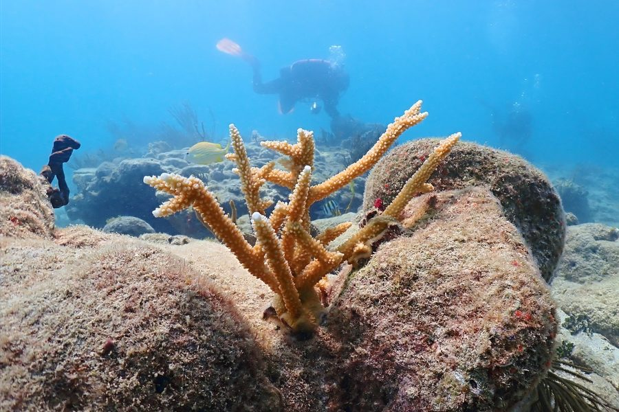
Acropora cervicornis
ESA listedIn-water nursery
A branching coral that once dominated Caribbean reefs. Populations across the Caribbean have significantly declined since the 1980s from disease outbreaks and the continual increase of sea surface temperatures. This species was one of the first corals listed under the Endangered Species Act and is a major focus of restoration efforts.
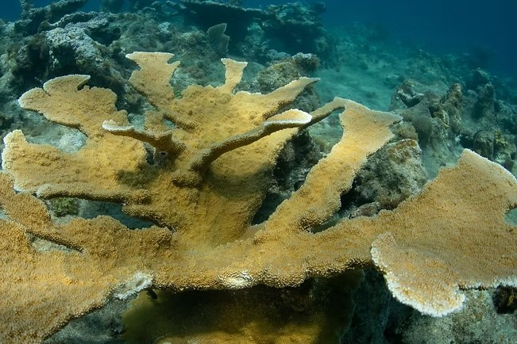
Acropora palmata
ESA listedIn-water nursery
A quintessential Caribbean branching coral and an ecologically important species. This “ecosystem engineer” forms the basis of shallow coral reefs — its large branches create complex reef structure that provides essential habitat for reef fishes. Like staghorn coral, elkhorn populations have drastically decreased since the 1980s, and it was among the first corals listed under the Endangered Species Act.
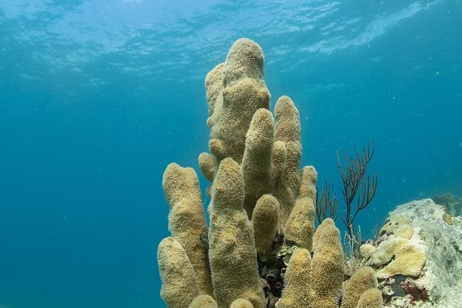
Dendrogyra cylindrus
SCTLD susceptibleLand-based nursery
Named for its unique pillar-like structure. It can be regionally rare, but was fairly abundant in the U.S. Virgin Islands. Unfortunately, this species is highly susceptible to the devastating Stony Coral Tissue Loss Disease (SCTLD), first reported in St. Thomas in 2019. Since then, pillar coral populations have nearly vanished around the USVI. Saving pillar coral from disease is a major focus of our land-based nursery operations, in order to preserve the remaining genetic diversity of this species.
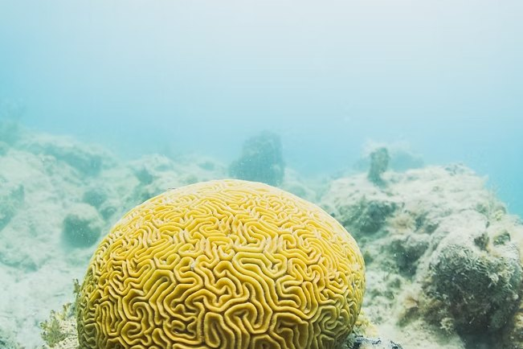
Diploria labyrinthiformis
SCTLD susceptibleLand-based nursery
A large, bouldering stony coral endemic to the Caribbean, and one of the many brain coral species susceptible to Stony Coral Tissue Loss Disease. Genotypes are housed in our land-based nursery to preserve remaining genetic diversity. Colonies in our nursery were collected from SCTLD-threatened reefs and rehabilitated in our water tables.
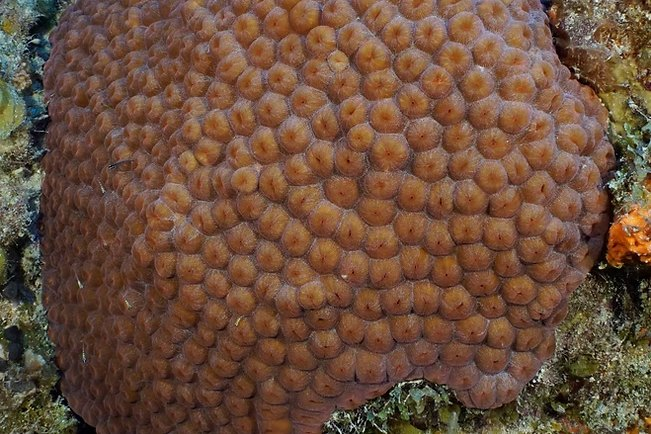
Montastraea cavernosa
SCTLD susceptibleLand-based nursery
A stony coral found across the Caribbean, notable for its large polyps and color variations. Typically a mounding species, it provides important reef structure. Like many other species we focus on, it is susceptible to Stony Coral Tissue Loss Disease. Colonies in our land-based nursery were rehabilitated following SCTLD transmission experiments conducted at the University of the Virgin Islands.
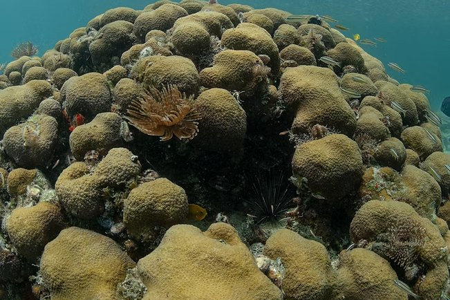
Orbicella annularis
EndangeredSCTLD susceptibleLand-based nursery
A massive bouldering coral that grows so that a single colony has multiple lobe structures, and one of the most important reef-forming corals in the Caribbean. It is listed as endangered due to significant loss attributed to recent mass bleaching events and the emergence of SCTLD. Boulder star coral was previously grown in our in-water nurseries but has since been relocated to the land-based nursery. This species is a major focus of our microfragmentation program.
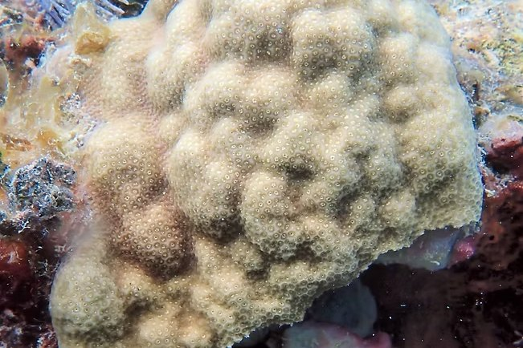
Porites astreoides
Outplanting trials
A “weedy” Caribbean coral characterized by high abundance, quick growth, and high fecundity. This species is resilient to bleaching and to diseases like SCTLD, however it does not contribute greatly to reef structure due to its small size. We are testing how outplanting this species alongside other, more threatened species may facilitate their growth through positive species associations.
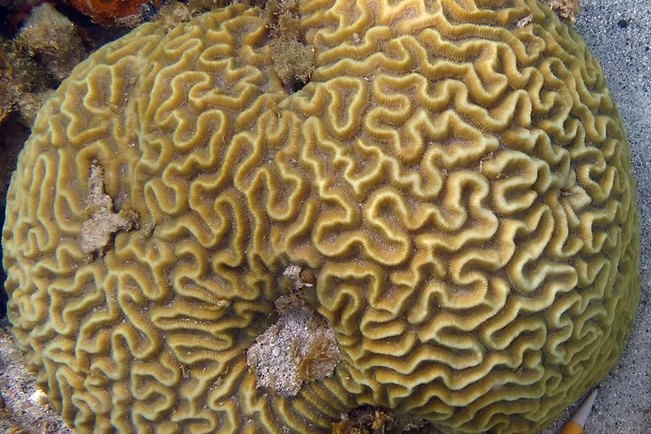
Pseudodiploria strigosa
SCTLD susceptibleLand-based nursery
A common bouldering stony coral found across the Caribbean, and an important reef-building species because it is typically found in high abundance. Similar to the other brain corals, it is susceptible to Stony Coral Tissue Loss Disease. Colonies in our land-based nursery were collected from SCTLD-threatened reefs or rehabilitated following disease transmission experiments in our water tables.